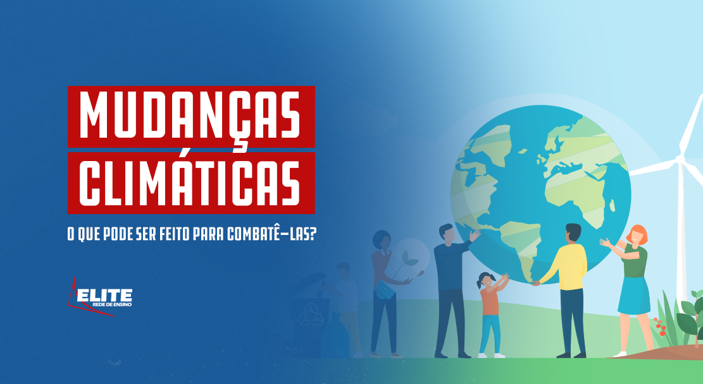
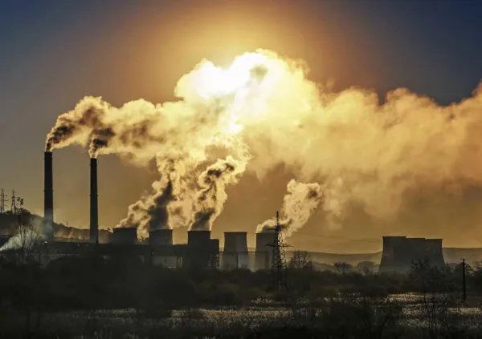
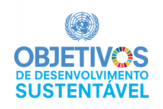

Sumário:
Oque é a agenda da ONU?
A Agenda 2030 da ONU é um plano de ação global adotado em setembro de 2015 pelos Estados membros da Organização das Nações Unidas (ONU) durante a Cúpula das Nações Unidas sobre Desenvolvimento Sustentável. A agenda estabelece 17 Objetivos de Desenvolvimento Sustentável (ODS) que devem ser alcançados até o ano de 2030.
Esses objetivos incluem: erradicar a pobreza; garantir a segurança alimentar e a agricultura sustentável; promover a saúde e o bem-estar; assegurar a educação inclusiva e equitativa; alcançar a igualdade de gênero; garantir o acesso à água potável e saneamento; promover a energia limpa e acessível; fomentar o crescimento econômico inclusivo e sustentável; reduzir as desigualdades sociais e econômicas; promover cidades e comunidades sustentáveis; proteger ecossistemas terrestres e aquáticos; combater as mudanças climáticas e suas consequências; promover a paz, a justiça e a igualdade; e fortalecer a parceria global para o desenvolvimento sustentável.
Ação contra a mudança global do clima
Nossas florestas, rios, oceanos e até mesmo locais remotos como o Ártico e a Antártida nunca estiveram tão ameaçados em toda a história da humanidade. Explorações predatórias ao longo dos anos estão esgotando os recursos naturais essenciais para a vida humana. E, é por isso, que defender o meio ambiente é defender a sobrevivência de todos nós no planeta. Aqui no Brasil, o nosso maior tesouro natural, a Amazônia, está em risco. Protegê-la e evitar a sua destruição é fundamental para enfrentar a Emergência Climática que estamos vivendo. Dona da maior biodiversidade do planeta e a maior floresta tropical do mundo, a Amazônia é responsável pelo regime de chuvas no Brasil e pelo equilíbrio climático global. Várias espécies já foram extintas e muitas outras correm o risco de desaparecer pela destruição dos seus ecossistemas. Nosso frágil planeta precisa de voz. Precisa de soluções. Precisa de ação. O movimento ambientalista, iniciado por volta dos anos 1960, foi de grande relevância na mobilização das discussões sobre a problemática ambiental. A partir das pressões desse movimento é realizada, em 1972, a Conferência das Nações Unidas sobre Desenvolvimento e Meio Ambiente. Este encontro foi um marco histórico por ser a primeira vez em que representantes de diversas nações debateram sobre os problemas ambientais. Desta conferência é criado o Programa das Nações Unidas para o Meio Ambiente (PNUMA), agência do Sistema ONU responsável em estabelecer parcerias que objetivam proteger o meio ambiente, a fim de promover o desenvolvimento sustentável. Desde então, ocorre a busca em conscientizar sobre a urgência de reduzir os impactos ambientais e mudar a estratégia que determina as atividades econômicas. Uma das iniciativas mais importantes nesse contexto foi a criação dos Objetivos do Desenvolvimento Sustentável (ODS), que são parte da Resolução 70/1 da Assembleia Geral das Nações Unidas da Agenda 2030. Foram determinados 17 objetivos que além de visar proteger o meio ambiente e lutar pela redução do aquecimento global, também abrangem questões como pobreza, fome, saúde, educação, igualdade de gênero, justiça social, saneamento, energia e urbanização. Se você quiser saber mais, temos um artigo no blog sobre esse tema, “ODS: o que esta sigla significa e como ela impacta o mundo hoje”
Quais ações podem ser realizadas para minimizar os impactos de mudanças climáticas?
Consumo consciente, uso de transporte público, redução no uso de água e energia elétrica, reuso de materiais. Esses são alguns exemplos de ações que podem ser desenvolvidas pela população de Minas Gerais para contribuir com a diminuição do impacto das mudanças climáticas e aumentar a qualidade de vida no planeta.

As principais atividades humanas que causam o aquecimento global
Entre as principais atividades humanas que causam o aquecimento global e consequentemente as mudanças climáticas, a queima de combustíveis fósseis (derivados do petróleo, carvão mineral e gás natural) para geração de energia, atividades industriais e transportes; conversão do uso do solo; agropecuária; descarte de resíduos sólidos (lixo) e desmatamento. Todas estas atividades emitem grande quantidade de CO² e de gases formadores do efeito estufa.

Quais adaptações precisam ser feitas diante das mudanças climáticas no Brasil?
Alguns exemplos de medidas de adaptação são: preparação de avaliações de risco, melhoria nas práticas de agricultura em regiões de maior incidência de seca, construção de barreiras para proteção contra aumento do nível do mar, desenvolvimento de sistemas de alerta preventivo, melhoria na cobertura de seguros.
objetivo: As metas do ODS (Objetivos do Desenvolvimento Sustentável) são: melhorar a educação, aumentar a conscientização e a capacidade humana e institucional sobre mitigação da mudança do clima, adaptação, redução de impacto e alerta precoce à mudança do clima.
São seus objetivos:
- Reforçar a resiliência e a capacidade de adaptação a riscos relacionados ao clima e às catástrofes naturais em todos os países
- Integrar medidas da mudança do clima nas políticas, estratégias e planejamentos nacionais
- Melhorar a educação, aumentar a conscientização e a capacidade humana e institucional sobre mitigação, adaptação, redução de impacto e alerta precoce da mudança do clima
- Implementar o compromisso assumido pelos países desenvolvidos partes da Convenção Quadro das Nações Unidas sobre Mudança do Clima [UNFCCC] para a meta de mobilizar conjuntamente US$ 100 bilhões por ano a partir de 2020, de todas as fontes, para atender às necessidades dos países em desenvolvimento, no contexto das ações de mitigação significativas e transparência na implementação
- operacionalizar plenamente o Fundo Verde para o Clima por meio de sua capitalização o mais cedo possível
- Promover mecanismos para a criação de capacidades para o planejamento relacionado à mudança do clima e à gestão eficaz, nos países menos desenvolvidos, inclusive com foco em mulheres, jovens, comunidades locais e marginalizadaS
